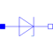

ZDiodeZener diode with 3 working areas |

|
Information
This information is part of the Modelica Standard Library maintained by the Modelica Association.
The simple Zener diode is a one port. It consists of the diode itself and an parallel ohmic resistance R. The diode formula is:
v/Vt -(v+Bv)/(Nbv*Vt)
i = Ids ( e - 1) - Ibv ( e ).
If the exponent in one of the two branches reaches the limit Maxexp, the diode characteristic is linearly continued to avoid overflow.
The Zener diode model permits (in contrast to the simple diode model) current in reverse direction if the breakdown voltage Bv (also known Zener knee voltage) is exceeded.
The thermal power is calculated by i*v.
Please note: In case of useHeatPort=true the temperature dependence of the electrical behavior is not modelled yet. The parameters are not temperature dependent.
Parameters (9)
| useHeatPort |
Value: false Type: Boolean Description: = true, if heatPort is enabled |
|---|---|
| T |
Value: 293.15 Type: Temperature (K) Description: Fixed device temperature if useHeatPort = false |
| Ids |
Value: 1e-6 Type: Current (A) Description: Saturation current |
| Vt |
Value: 0.04 Type: Voltage (V) Description: Voltage equivalent of temperature (kT/qn) |
| Maxexp |
Value: 30 Type: Real Description: Max. exponent for linear continuation |
| R |
Value: 1e8 Type: Resistance (Ω) Description: Parallel ohmic resistance |
| Bv |
Value: 5.1 Type: Voltage (V) Description: Breakthrough voltage = Zener- or Z-voltage |
| Ibv |
Value: 0.7 Type: Current (A) Description: Breakthrough knee current |
| Nbv |
Value: 0.74 Type: Real Description: Breakthrough emission coefficient |
Connectors (3)
| p |
Type: PositivePin Description: Positive electrical pin |
|
|---|---|---|
| n |
Type: NegativePin Description: Negative electrical pin |
|
| heatPort |
Type: HeatPort_a Description: Conditional heat port |
Used in Examples (1)
|
Modelica.Electrical.Analog.Examples Example for Zener diodes |